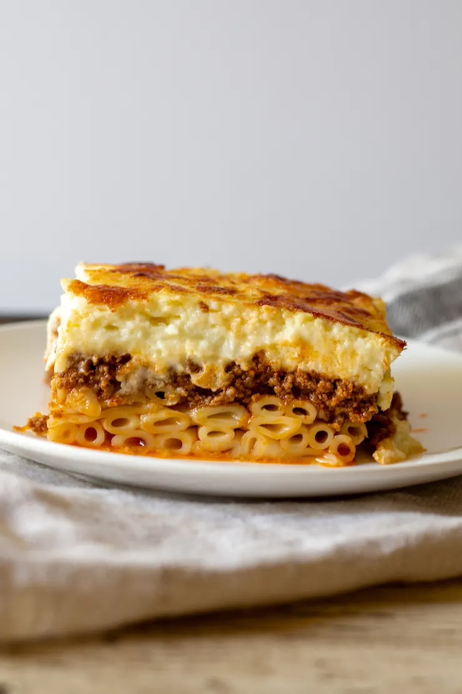

Pastitsio Recipe

Description
Pastitsio (Greek: παστίτσιο, pastítsio) is a Greek baked pasta dish with ground meat and béchamel sauce, with variations of the dish found in other countries of the Mediterranean Sea.
Pastitsio takes its name from the Italian pasticcio, a large family of baked savory pies which may be based on meat, fish, or pasta, with many documented recipes from the early 16th century,[1] and continuing to modern times.
More information, here
Ingredients
- 1 tablespoon butter
- 1 onion, chopped
- 3 pounds lean ground beef
- ¾ cup water
- 1 (6 ounce) can tomato paste
- 2 tablespoons ground allspice
- 1 teaspoon ground nutmeg
- 1 teaspoon ground cinnamon
- 2 eggs, beaten
- 1 ½ teaspoons salt
- ¼ teaspoon pepper
- 1 pound uncooked macaroni
- 2 eggs, beaten
- 1 cup grated Parmesan cheese, divided
- ½ cup butter, melted
- 4 eggs, well beaten
- ¾ cup half-and-half
- 1 cup grated Parmesan cheese
- 1 tablespoon all-purpose flour
- ½ teaspoon salt
- ground nutmeg to taste
Steps
- Step 1: Melt 1 tablespoon of butter in a large skillet over medium-high heat. Stir in onion and cook until it begins to soften, about 3 minutes. Stir in the ground beef, and cook until crumbly and no longer pink. Pour in the water and tomato paste. Season with salt, pepper, allspice, nutmeg, and cinnamon; cover, and simmer for 5 minutes. Remove from heat, adjust salt to taste, then refrigerate until cold. Once cold, remove any congealed fat, and thoroughly mix with 2 beaten eggs, and set aside.
- Step 2: Preheat oven to 400 degrees F (200 degrees C).
- Step 3: Bring a large pot of lightly salted water to a boil. Add macaroni and cook for 8 to 10 minutes or until al dente; drain, and rinse under cold water to cool. Mix the macaroni in 2 beaten eggs until well coated.
- Step 4: Evenly spread half of the macaroni mixture into a 11x14x2 inch baking pan, sprinkle with 1/2 cup of the grated parmesan cheese, and drizzle with 1/2 cup of melted butter. Spread the meat mixture overtop, then finish with the remaining macaroni. Sprinkle the macaroni with another 1/2 cup of Parmesan cheese, and drizzle with 1/2 cup of melted butter.
- Step 5: Whisk together 4 beaten eggs with the half-and-half, 1 cup of Parmesan cheese, flour, and salt; whisk until well blended. Pour the cream mixture evenly over top of the pastitsio, and sprinkle with nutmeg.
- Step 6: Cover the pan with foil, and bake in the preheated oven for 15 minutes. Remove the foil, and bake until the top has turned golden brown, about 30 minutes. Remove from oven, and allow to stand for 15 minutes before serving.